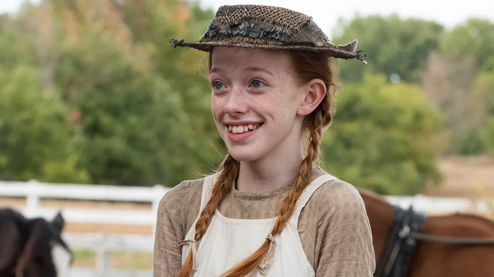
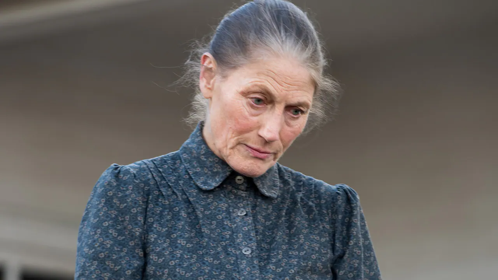
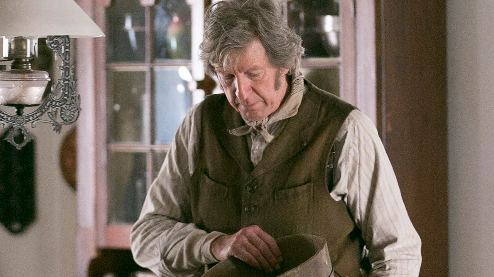
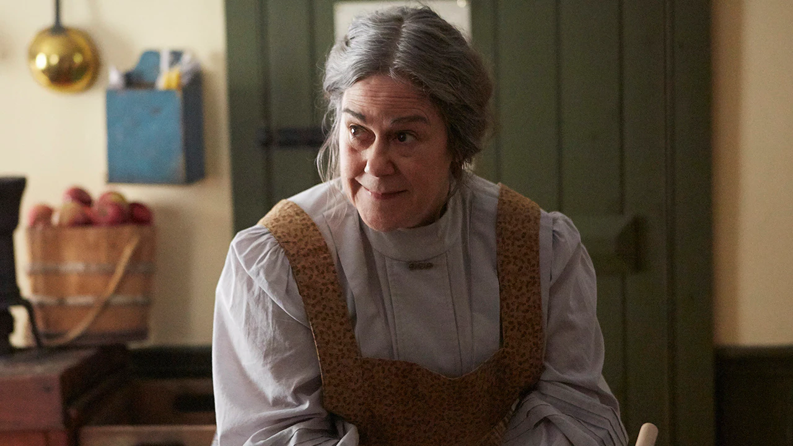
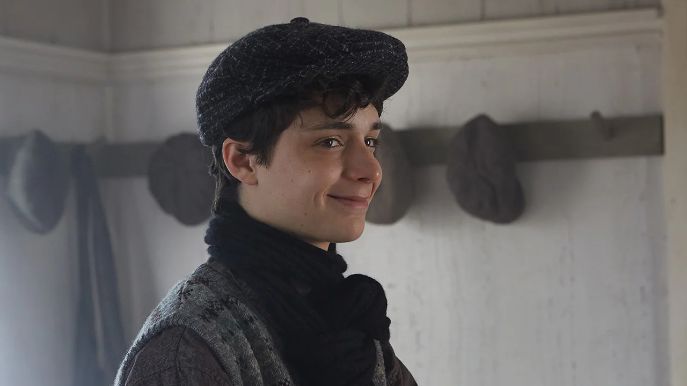
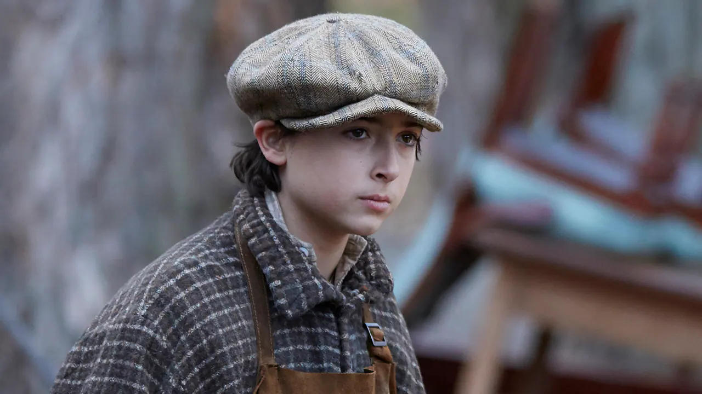

빨간 머리에 고집 센 눈동자, 꿈 많고 당찬 아이 앤.
이 소녀가 초록지붕집의 마릴라와 매슈 남매에게 온다. 뜻밖의 운명으로.
루시 모드 몽고메리의 소설이 원작인 작품.
예고편
Anne with an E
Non Official Site of Popular, Award Winning, Internationally Acclaimed TV Show
등장 인물

배우
에이미베스 맥널티
앤 셜리
씩씩하고 씩씩한 우리의 주인공. 힘든 과거를 가진 고아였던 Anne은 마침내 Cuthberts와 가족이 되었습니다. 항상 부적응자들의 친구이자 보호가 필요한 사람들과 친구가 되어 그들을 위해 싸웁니다. 그녀의 경쟁심은 그녀의 자연, 상상력, 로맨스, 비극에 대한 사랑과 마찬가지로 그녀를 움직입니다. 그녀는 이번 시즌 어른이 되어 어린 시절의 경이로움에서 더 성숙한 관점으로 옮겨가지만, 이 싹트고 있는 성숙함과 함께 오는 복잡한 감정은 종종 그녀를 혼란스럽게 하고 괴롭게 합니다.

배우 제랄딘 제임스
마릴라 커스버트
앤의 엄마가 되는 내성적인 여성. Marilla는 Anne이 십대가 되면서 새로운 양육 문제에 직면하고 그녀의 책임자가 로맨스와 상실을 헤쳐 나가는 데 도움을 줍니다. 그녀는 시력이 나빠지기 시작하면서 쇠약해진 두통으로 고생하고, 어머니처럼 병자가 되는 것을 두려워합니다. 오랜 친구 레이첼과 달리 마릴라는 새로운 경험과 세상을 보는 새로운 방식에 마음을 열고 있습니다.

배우 RH 톰슨
매튜 커스버트
수줍음이 많은 매튜는 사랑하는 앤에게 이끌려 세상을 떠납니다. 자유분방하고 호기심 많은 생물을 키워야 하는 어려움에도 불구하고 그는 친절하고 사랑이 많은 아버지의 모습을 하고 있습니다. 아이를 키우는 일은 매튜에게 고통스러운 어린 시절의 기억을 불러일으키지만, 앤 덕분에 그는 자신과 자신이 할 수 있는 일에 대해 점점 더 많이 알게 됩니다.

배우 코린 코슬로
레이첼 린데
마릴라의 평생 친한 친구인 레이첼은 에이번리의 비공식 시장이자 동네 소문쟁이입니다. 그녀는 시청 회의를 주재하고(아마도 자신의 임명에 의해) 학교 이사회의 일원입니다. 그녀는 보수적인 면도 있고 변화를 받아들이는 데 더디지만 남편 토마스와 열정적이고 사랑스러운 결혼 생활을 즐기는 충성스럽고 친절한 여성이기도 합니다.

배우 달리라 벨라
다이애나 배리
앤의 충성스러운 친구이자 동지 정신. 신중하고 내성적인 다이애나는 앤을 지지하는 데 도움을 주지만 다른 사람들에게는 덜 편안합니다. 그녀의 아름다움은 Avonlea의 모든 소년들에게 낭만적인 관심을 불러일으킨다. 다이애나는 성장과 성숙의 계절이 있습니다.

배우
길버트 브라이스
모험을 좋아하는 지적인 청년 길버트는 지난 9개월 동안 증기선에서 일해 왔습니다. 여전히 아버지를 애도하는 길버트는 고된 일과 모험의 방해를 즐깁니다. 트리니다드에 들르는 동안 길버트가 나서서 아기를 낳을 때 길버트는 의사가 되고 싶다는 사실을 깨닫습니다. 그는 절친한 친구 Sebastian과 함께 Avonlea로 돌아온 후 목표를 달성하기 위해 학교를 따라잡고 앞으로 나아가는 데 열정을 쏟습니다. 이번 시즌에는 앤과의 관계가 더욱 복잡해집니다.

배우 아이메릭 제트 몬타즈
제리 베이나드
Jerry는 젊은 프랑스계 캐나다인 농부입니다. 그의 금욕적이고, 완고하고, 실용적인 성격 때문에 그와 Anne은 끊임없이 논쟁을 벌입니다.